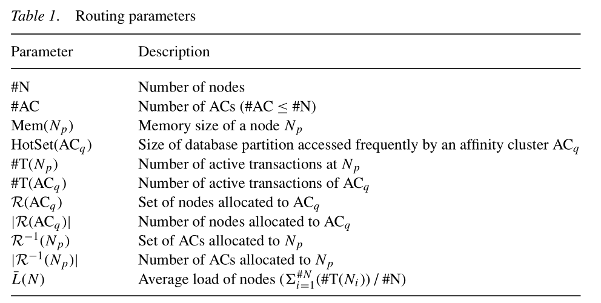
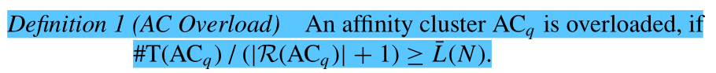
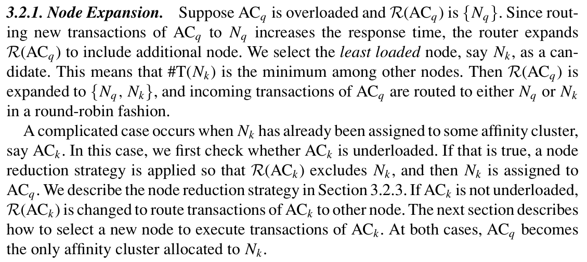
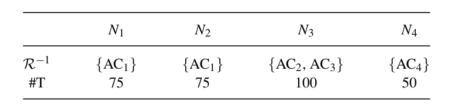
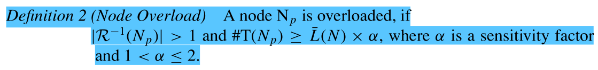
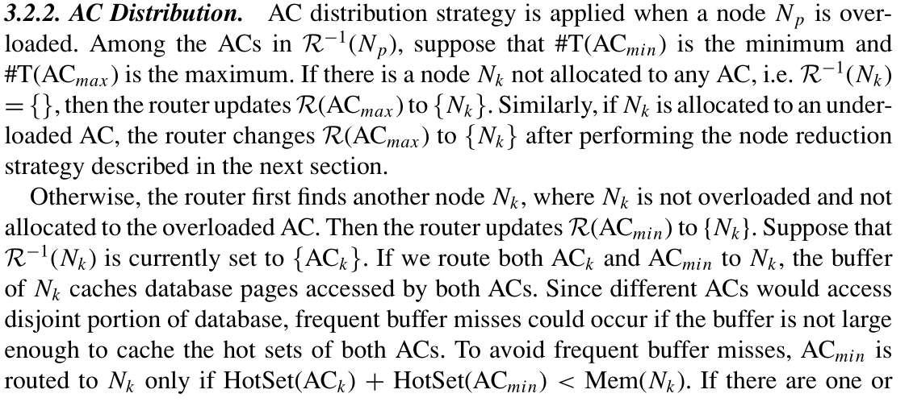
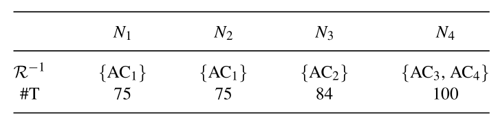
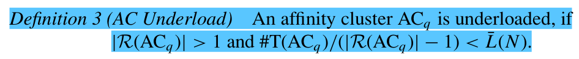
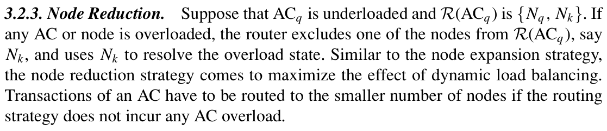
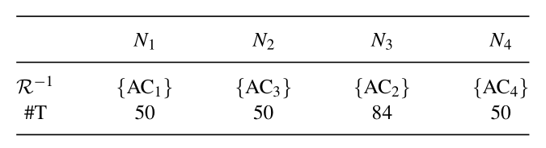

Dynamic Affinity Cluster Allocation in a Shared Disks Cluster论文阅读
06年的一篇论文，讲述了一种新的负载均衡方法，个人觉得比较巧妙，适用性可能比较广，思路简单清晰，利用事务分类cluster以及动态调整集群节点状态的方法达到一个负载均衡。
论文贡献
In this paper, we propose a new transaction routing algorithm, named Dynamic Affinity Cluster Allocation (DACA).DACA can make an optimal balance between the affinity-based routing and indiscriminate sharing of load in the SD cluster. As a result, DACA can increase the buffer hit ratio and reduce the frequency of internode buffer invalidations while achieving the dynamic load balancing.
提出一种新的负载均衡的方法，提高缓存命中率以及降低内部节点缓存失效频率
传统方法
In [19], incoming transactions of the rush class are spread across all nodes in a round-robin fashion. On the other hand, in [7],transactions are routed to the least loaded node.
- 传统方法一个就是所有节点轮流进事务，round-robin
- 事务分配到负载最低的节点上执行

存在的缺点
- 缓存中的数据可能来自于不同分区，在缓存不够的情况下，竞争缓存导致缓存命中率降低。
- 涉及相同数据的事务在不同节点执行，导致不同节点上缓存多份相同数据，导致在一个节点上更新数据后，其他节点缓存全部失效。
DACA算法
结合传统的两种算法设计了一个新算法DACA，首先介绍几个定义
AC(affinity cluster):将涉及到数据类似的事务归成一个transaction class，这个transaction class会发送到AC中设置的节点。也就是说AC里涉及到的事务数据都是根据某种方法划分的。
AC由一个以上的Node组成，而一个Node可以属于多个AC。
初始化时，AC必须被分配，Node可以空闲

上面定义的我们主要记住几个东西
$R$运算，代表AC到Node的映射，AC对应着哪些Node
$R^{-1}$，$R$的逆运算，代表Node到AC的映射，Node关联着哪些AC
$|R|$ 映射出来集合的大小
$T$ 代表负载大小
$\overline{L}(N)$代表集群负载均值
几种负载情况
算法通过解决几种负载情况来设计
AC Overload


简而言之，就是在AC中加入最低工作负载节点，并将这个最低工作负载节点与原先关联的AC断联。
看例子最好懂，原先N1-N4分别对应AC1-AC4，并且每个AC全为50个事务，现在AC1增加到150个事务，此时经过计算均值为75,AC1根据定义1，已经Overload，此时除了N1，其他节点都是50个事务，所以挑了N2进入AC1，并与之前的AC2断联,AC2将加入N3 N4选一个最小的加入。此时负载就变为下图

Node Overload


概括一下如果$Np$过载，那么找他相关的AC，将最大的AC和它断联，然后找没分配AC，或者处于ac underload的node，将该node和$AC{max}$关联，如果没有这样的节点，那就找个#T(N)最小的，将$AC_{min}$和该节点关联。
继续上一个例子，将#T(AC2)从50加到84，此时的负载均值为83.5,设置此时的参数为1.6,根据定义2可得$134>83.5*1.6=133.6$ 。此时将AC3加入到N4,此时状态变为下图

AC Underload


如果$AC_q$负载太小了，并且由AC过载或者Node过载，此时会将一个节点与$AC_q$断联，通过Node expansion或者AC distribution方式加入一个AC。
还是续上一个例子，将#T(AC1)减到50，此时的负载均值为 58.5，AC1根据定义3计算$50/(2-1)=50<58.5$已经underload,并且N4已经过载此时就会将AC1中断联一个,给N4的$AC_{max}$关联，此时变为下面的状态
